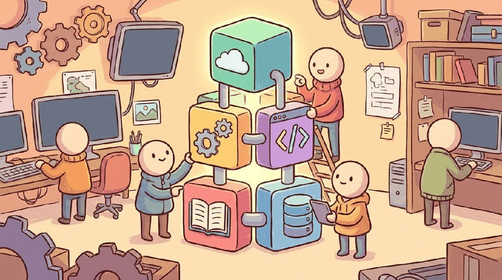

"The right SDK shaves a week off your prototype; the wrong one adds two months of integration work."
Pip, Workflow-Optimizing AI Agent
Chapters 11 through 13 covered the API, the prompt, and the hybrid decision. This chapter is the SDK toolbox: LangChain, LiteLLM, Instructor, Outlines, structured outputs, observability, and the small libraries that let you build LLM apps quickly without locking yourself to one vendor.
Part III walked you through provider APIs, prompt engineering, and hybrid ML+LLM design. This chapter consolidates the working toolchain that every workflow in the part assumes: the provider SDKs (OpenAI, Anthropic, Google, litellm), the prompt-engineering platforms (LangSmith, PromptLayer, Helicone), and the local-inference toolchain (Ollama, llama.cpp, MLX) you reach for when the cloud bill or the privacy budget runs out. Bookmark this chapter and come back to it whenever you stand up a new API client.
Chapter Overview
Part III walked through provider APIs, prompt engineering, and hybrid ML+LLM design. This chapter consolidates the toolchain that every workflow in the part assumes: the provider SDKs (OpenAI, Anthropic, Google, litellm), the prompt-engineering platforms (LangSmith, PromptLayer, Helicone), and the local-inference toolchain (Ollama, llama.cpp, MLX) you reach for when the cloud bill or the privacy budget runs out.
Bookmark this chapter and return whenever you stand up a new API client. The Tools chapters compound: every later Part assumes the API-stack vocabulary that this chapter locks in.
- Choose between OpenAI, Anthropic, Google, and aggregator SDKs (litellm) for a given product context.
- Configure prompt-engineering platforms (LangSmith, PromptLayer, Helicone) for tracing and replay.
- Run a frontier model locally with Ollama, llama.cpp, or MLX when privacy or cost demands it.
- Compare the standard API benchmarks and live status pages that govern Part III decisions.
- Identify the canonical models (closed frontier, open weights, local) used throughout Part III exercises.
Sections in This Chapter
Prerequisites
- LLM API basics from Chapter 11
- Prompt engineering patterns from Chapter 12
- Python development comfort (pip, virtualenv, git)
- 14.1 Platforms "Platform" in Part III means something different from Parts I and II.
- 14.2 Libraries & Frameworks LangChain provides a unified interface for working with large language models from any provider.
- 14.3 Datasets & Benchmarks Part III's dataset layer differs from Part II's.
- 14.4 Models The models you call in Part III split into three tiers by access mode.
- 14.5 External Reading & Communities Part III's external resources are split between provider documentation (which is canonical for API behavior), live status pages (which are canonical for what is breaking right now), and...
What Comes Next
Part IV shifts from "call a frontier model through its API" to "adapt a model to your task": continued pretraining, supervised fine-tuning, LoRA / QLoRA, preference optimization (DPO, GRPO), and the reasoning-recipe lineage that the DeepSeek-R1 release made canonical in 2025. Chapter 21 closes Part IV with its own Tools of the Trade chapter, focused on training frameworks (axolotl, TRL, torchtune, Unsloth), preference datasets, and the open-recipe ecosystem the post-R1 community settled on. The Tools chapters compound: every later one assumes the API-stack vocabulary that this chapter just locked in. Continue to Chapter 15: Synthetic Data Generation & LLM Simulation.